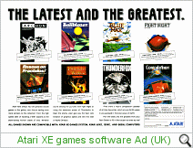

|
The XEGS or XE Games System was
proudly displayed within a glass case at the January 1987 CES by
Sam Tramiel, and unusually, it was
launched in July that same year as promised.
At the CES in Chicago, the Atari
Booth was topped with a real Cessna Airplane, and the theme was
"flying high with Atari". Atari announced the XEGS would come
bundled with Flight Simulator II and this could be played from
the new 128Kb cartridge on a large screen monitor inside the
cockpit of the Cessna, a nice piece of marketing by Atari which
impressed the assembled crowds.
The official press release from
Atari:
ATARI TO BEGIN SHIPMENTS OF NEW XE
GAME SYSTEM BUNDLED WITH THREE POPULAR GAMES
Atari Corporation will include three popular cartridge games at
no additional cost when it begins shipping the new XE video game
system in July.
Games bundled with the XE game system are the top-selling hit
Flight Simulator II, from SubLogic; the Atari classic, Missile
Command; and Blast 'Em, a shooting game being specially
developed for the XE. The new game system is being demonstrated
in Atari's booth (6540) at the Summer Consumer Electronics Show
starting today at McCormick Place.
"The XE is the ultimate game system for the serious game
player," said Michael Katz, executive vice president for
marketing and entertainment electronics. "It has more features
and power than any other game system, and we're including $80
worth of free games with every system. No other game maker is
offering anything close to it."
The XE game system features a console with 64 kilobytes of
memory, an attachable game-playing keyboard, video gun, and a
Joystick.
Its memory, equivalent to an 8-bit computer, is the largest in
any game system. That gives it superior graphics, dramatic
animation and realistic sound, and the power to run advanced
computer games, Katz noted.
The cartridge for the XE game system can store over 256
Kilobytes of program, which is twice as great as any other
comparable system, Katz added. Atari is also selling a disk
drive for players who prefer desk- based software.
The attachable keyboard and video gun make it easy to play
hundreds of sophisticated games such as Flight Simulator II,
which requires keyboard interaction. The target gun is attached
to the console to electronically "shoot" at images on a TV or
monitor.
"The XE can play more games than any comparable system, and the
library grows steadily as Atari converts disk games to
cartridges, Katz said. The XE game system can play games written
for the Atari XE and XL computer systems."

Atari spent a lot of time ensuring
their latest (and last) 8-bit system would be the system of
choice. Focus groups, input from retailers and other
marketing data was used to design a system that was cost
effective and upgradeable. Some retailers wanted a plain
games system to sell, while others wanted Atari to continue to
produce an 8-Bit computer.
A smart compromise arose, and Atari
produced a system based on the existing 65/130XE computers,
ensuring compatibility across the range (as was traditional) and
ensuring the system had a vast software base. You could
purchase the XE Games console, and later buy an add-on pack with
keyboard and cassette drive, the first 8-Bit computer in the
Atari range with a detachable keyboard. A light-gun was also
available.
Soon after its release, Atari
repackaged the XEGS with the Keyboard and light-gun as standard.
In 1987, Atari completely sold out of the XEGS (along with the
7800), although actual sales figures were never released
(although it was announced that Atari sold 100,000 XE computers
in Poland alone in 1986).

AEX has placed the XEGS in the Video
Games section, but it was marketed as both a games machine and a
home computer. For all intents and purposes, the
XEGS is a home-computer in disguise! The XEGS was also
marketed under the "XE Computer System" or just plain "XE
System".
|